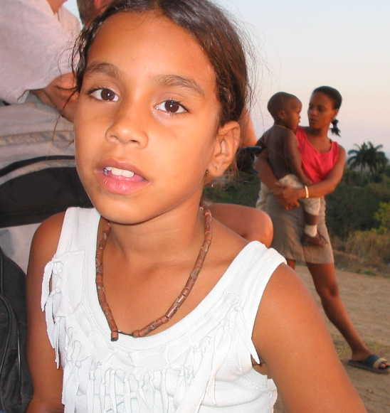
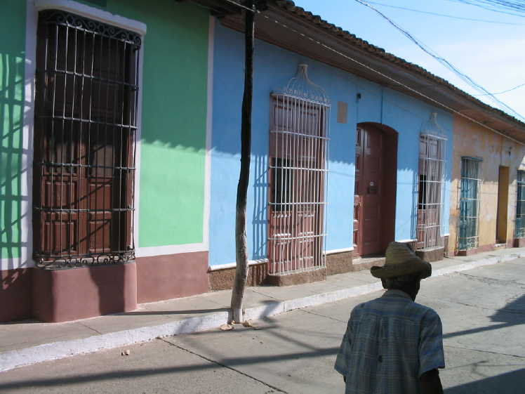
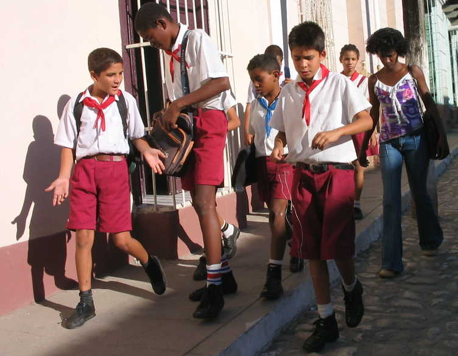
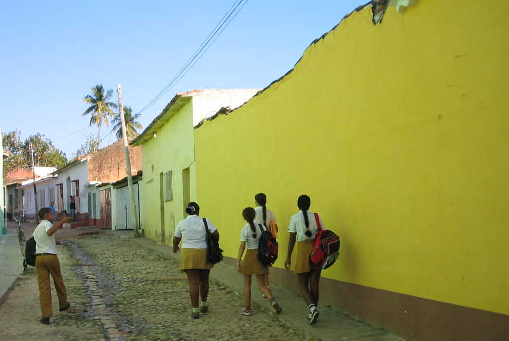
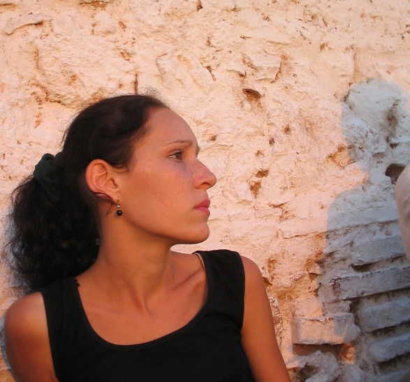
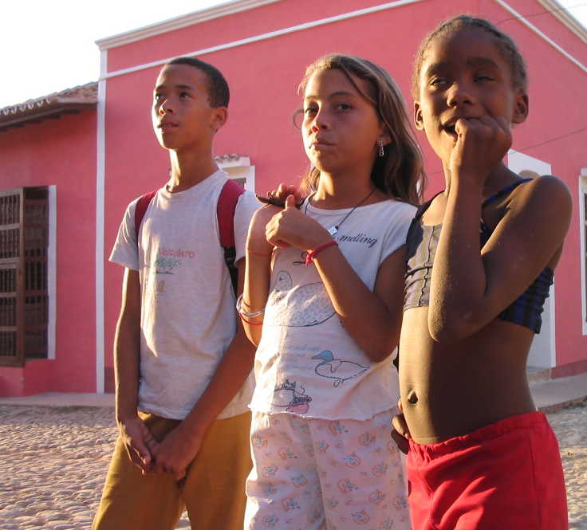
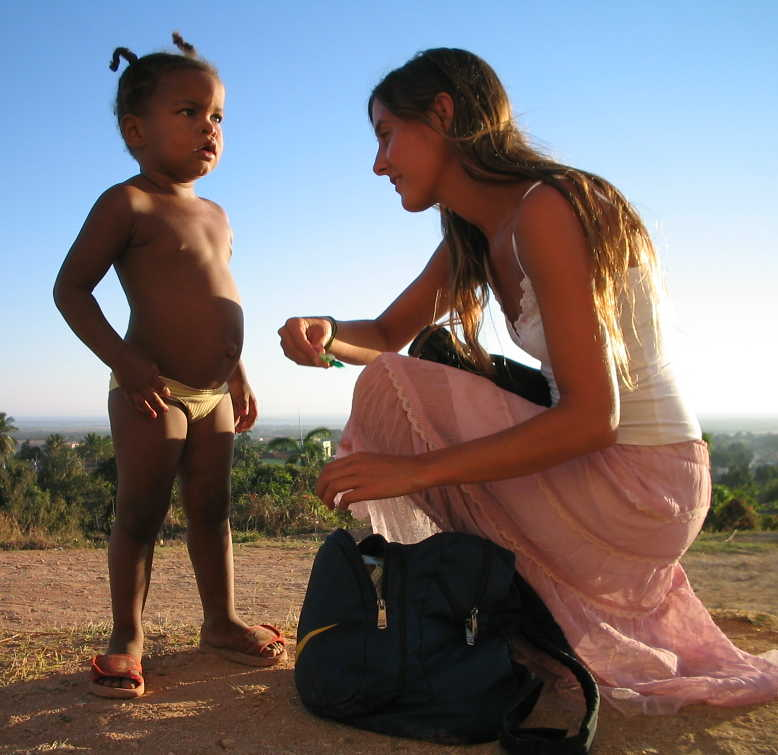
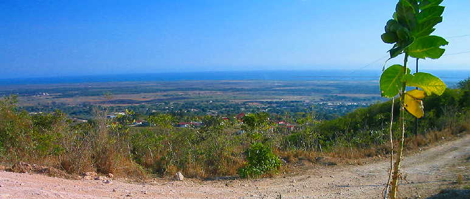

Trinidad, Cuba 2004
(All photos copyrighted by Richard Smith. Non-commercial use ok with approval and attribution.)
Click on the links
below to go to each page of photos.
|
Trinidad
1
|
|||

A young child who lived
somewhere near the old abandoned church above Trinidad.

In an area of about ten
square blocks in Trinidad the buildings are painted and cared for.
Outside this tourist area the streets are dirt and stone.

School children in uniform.
The red scarves represent the communist party and the "revolution."

A typical street near
Trinidad's tourist area.

This shy young woman sells
bean necklaces and dolls her aunt makes.
She was not aware I was taking this photo.

Cuba's children: confident,
brash, polite most of the time. Most seem to have a great sense of humor and
fun.

I was sitting on a hillside
above Trinidad and four young women from Chile walked by.
One stopped to talk to
one of the ever-present children.

The view toward Ancon and the Caribbean from a hill above Trinidad, Cuba.
|
Trinidad
1
|
|||
Photo
pages sponsored by www.jewishcuba.org